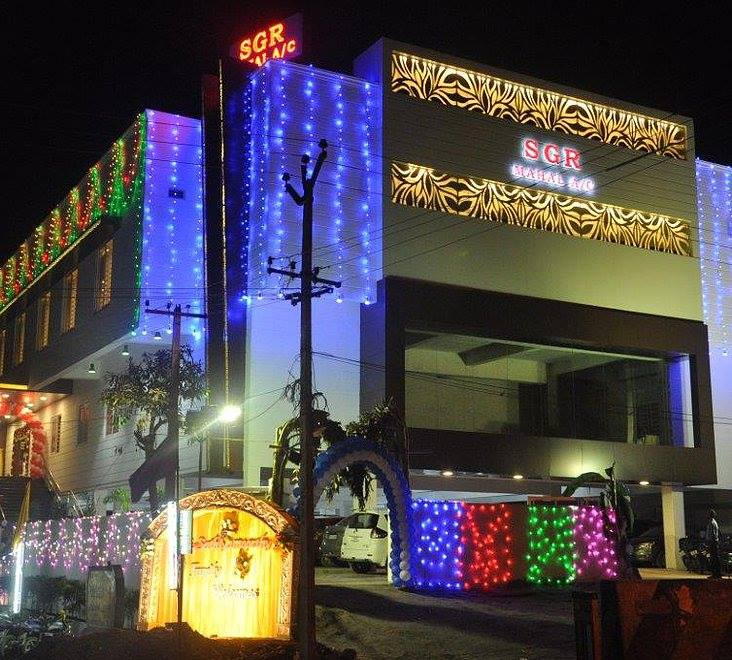
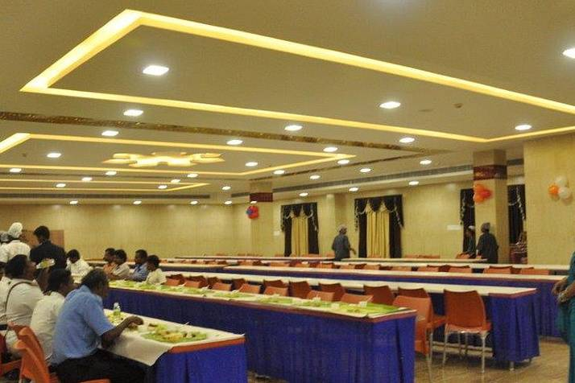

Venue
Situated in the Auto Hub of India, SGR Mahal, Medavakkam, Chennai, is a gorgeous and pocket-friendly destination to get married. It offers multiple banquet halls, which makes it easier to host multiple functions at the same venue. Whether you are hosting an intimate event or a lavish celebration, the banquet is well-equipped to handle all your functions seamlessly.
Party
Music and Dinner on 8th at Evening 7:00Pm. family get-togethers, as the banquet has well-facilitated arrangements for all big and small level events. It can comfortably accommodate from a small to massive gathering for your big day.